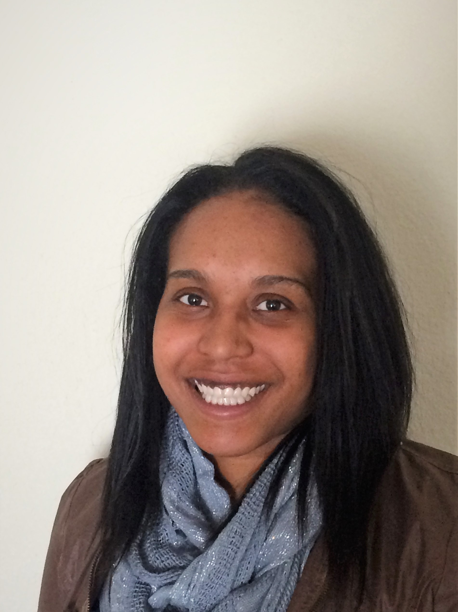

About Me
Currently I am employed as a Staff Accountant in the Hospitality Industry. I gained my degree in 2013 when I graduated from the University of Colorado in Denver. My degree is in Business Administration with an emphasis in Accounting. My roots of college began at the University of Kansas. Go Jayhawks! I attened KU for 3 years and finished my degree at the University of Colorado to be close to family. I enjoy accounting but would like to gain a new skillset in being a Full Stack Web Developer. Ever since the days of Myspace I have been interested in styling and producing code for websites.
I have been a resident of Colorado for 21 years and I have loved every moment of it. My favorite thing to do is to go on walks with my husband, Matt, and my cat, Giannis. Giannis is our 1st pet together as a couple. So far it has been a really great experience. Some of my favorite things to do are gaming, swimming, and being outdoors. When I was younger I was employed as a lifeguard for 8 years.I am the eldest of three.